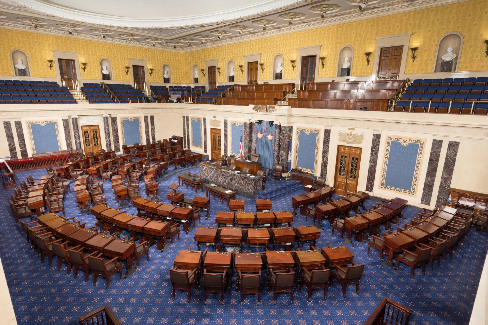

From Wikipedia, the free encyclopedia
| Cloture | |
|---|---|
| Type | Parliamentary procedure |
| U.S. Senate rule | Rule XXII |
| Adopted | 1917 |
| Threshold | Three-fifths of senators duly chosen and sworn (60 of 100), for most matters |
| Purpose | End debate, including a filibuster |

Cloture is a procedure for ending debate in a legislative body and bringing a matter to a vote. In the United States Senate, cloture under Rule XXII is the only formal mechanism for cutting off a filibuster. A cloture motion, signed by at least sixteen senators, is voted on after an intervening day; if three-fifths of the Senate—normally sixty senators—agree, debate is limited to a maximum of thirty further hours before a final vote.
The Senate adopted the first cloture rule in 1917, after a filibuster killed President Woodrow Wilson's armed-ship bill; Wilson denounced "a little group of willful men" and demanded a way to end debate. The original rule required two-thirds of senators present and voting. In 1975 the threshold was lowered to three-fifths of all senators duly chosen and sworn, and the practice of the "silent" or tracking filibuster made cloture filings a routine part of Senate scheduling.
Cloture is now invoked on most significant legislation and many nominations, effectively imposing a sixty-vote supermajority requirement on contested business. In 2013 and 2017 the Senate reinterpreted its rules by majority vote—the so-called nuclear option—to allow cloture by simple majority on nominations, including Supreme Court nominations. Motions to end a talking filibuster are rare in the modern Senate because filibusters are usually conducted by simply threatening extended debate rather than by holding the floor continuously.
Closure procedures exist in many parliamentary systems. The British House of Commons adopted closure in the 1880s in response to Irish obstruction; the French term clôture gives the procedure its name. Most such rules require only a simple majority, unlike the Senate's supermajority practice.